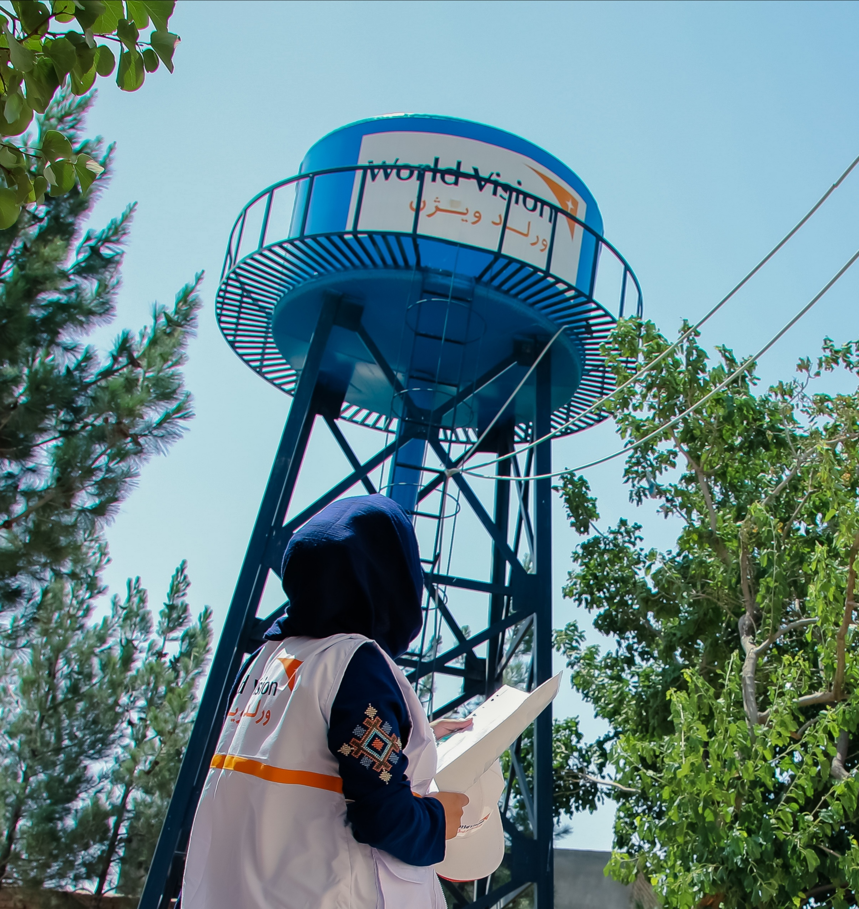
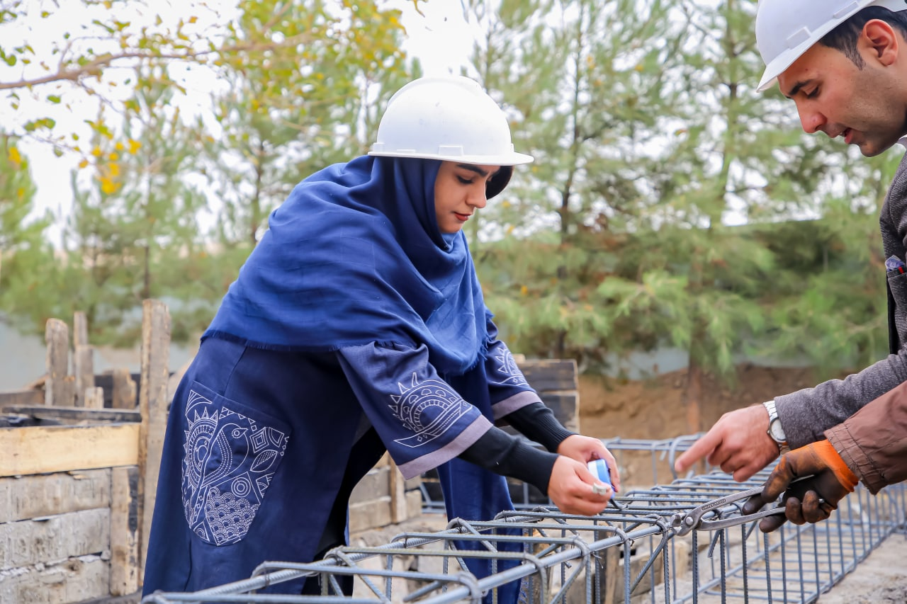

Job description



-
Work with target communities to identify sites for water system
construction, ensuring the inclusion of women and people with
disabilities in the siting of water points.
-
Provide support for the design and construction/rehabilitation of hand
pumps, solar powered mechanized water systems (networks), gravity-fed
water networks from spring catchments, and rainwater harvesting
systems.
-
Support WV WASH staff in the preparation of quality specifications for
the construction materials for different types of WASH infrastructure.
-
Support WV WASH staff in the preparation of implementation plans for
construction works.
-
Support WV WASH staff to ensure all required resources for every
single construction project at community level are well estimated and
planned for procurement.
-
Support the WV WASH team to develop all necessary monitoring and
supervision tools used for construction projects.
-
Support the WV WASH team ensure quality implementation of construction
works with respect of specifications and timeline of implementation.
-
Support the WV WASH team to review and confirm the payment claims made
by the construction company and assess the work executed for the
release of contractor’s payment
-
Support the WV WASH team to provide good quality monthly progress
reports of the construction works.
-
Support the WV WASH team to arrange proper documentation of project
technical documents such as drawings, BoQs, Specifications, completion
report, hand over forms and etc